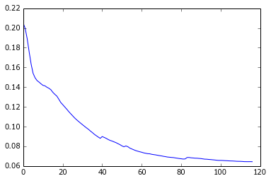
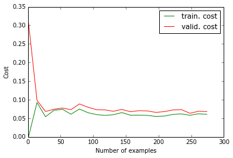

Session recording of a test to check training time and convergence for a dataset "compressed" with PCA. The eigen vectors were not taken from the training set as a whole, but from the list of images. Then the PCA-reduced images were used to build the training and validatation sets. Set-up: Multi-layer perceptron with one hidden layer of 50 units. Input layer with all the pixels from 5 pictures. Gradient descent with adaptive learning rate with momentum. Data = bigrednight: 345 color pictures of 40x40 pixels, each having an associated time stamp. This gives 24005 features This is a follow-up on experiments shown in scalingrate.html
Results: The pixels of the artificial data from bigrednight are highly correlated, so that the dimensionality of the images could be reduced from 4800 to 36, while loosing as little as 1e-6 variance. It will be interesting to see how much real data can be reduced. While I wanted initially to also use the PCA-reduced images as prediction targets, for some reason it did not work. The gradient descent converges almost immediately at a very high error. No reason was found for that, to be investigated. However, when using the uncompressed images as targets, it works fine. This already improves significantly the training times compared to unreduced inputs.
In [1]: runfile('/home/romain/prog/photoweather/experiments/bigrednight/bigrednight.py', wdir='/home/romain/prog/photoweather/experiments/bigrednight')
In [2]: reducedset = load_dataset()
In [3]: X = reducedset['train'][0]
In [4]: X.shape
Out[4]: (276, 185)
In [5]: y = np.dot(reducedset['train'][1], reducedset['reducer'].T)
In [6]: y.shape
Out[6]: (276, 4800)
In [7]: 185/5
Out[7]: 37
In [8]: reducedset['train'][1].shape
Out[8]: (276, 36)
In [9]: net = Network(36, outdim=4800)
In [10]: costs, e = net.train(X, y)
Starting a training run...
Total training time: 65.814s in 117 epochs, cost: 0.064386
In [11]: plt.plot(costs)
Out[11]: [<matplotlib.lines.Line2D at 0x7ff70dc41650>]

In [12]: reducedset['train'] = X, y
In [13]: Xv = reducetset['valid'][0]
Traceback (most recent call last):
File "<ipython-input-13-e436e2095075>", line 1, in <module>
Xv = reducetset['valid'][0]
NameError: name 'reducetset' is not defined
In [14]: Xv = reducedset['valid'][0]
In [15]: yv = np.dot(reducedset['valid'][1], reducedset['reducer'].T)
In [16]: yv.shape
Out[16]: (34, 4800)
In [17]: reducedset['valid'] = Xv, yv
In [18]: net = Network(36, outdim=4800)
In [19]: plot_learning_curve(reducedset, net)
Starting a training run...
Total training time: 3.198s in 160 epochs, cost: 0.000000
Starting a training run...
Total training time: 20.436s in 500 epochs, cost: 0.092510
Starting a training run...
Total training time: 27.438s in 433 epochs, cost: 0.054199
Starting a training run...
Total training time: 37.799s in 426 epochs, cost: 0.071503
Starting a training run...
Total training time: 34.719s in 299 epochs, cost: 0.074216
Starting a training run...
Total training time: 28.821s in 225 epochs, cost: 0.061053
Starting a training run...
Total training time: 40.683s in 286 epochs, cost: 0.075002
Starting a training run...
Total training time: 51.440s in 300 epochs, cost: 0.065071
Starting a training run...
Total training time: 60.554s in 290 epochs, cost: 0.060014
Starting a training run...
Total training time: 56.541s in 285 epochs, cost: 0.057897
Starting a training run...
Total training time: 87.827s in 383 epochs, cost: 0.059650
Starting a training run...
Total training time: 34.455s in 123 epochs, cost: 0.065390
Starting a training run...
Total training time: 59.850s in 213 epochs, cost: 0.058341
Starting a training run...
Total training time: 64.546s in 229 epochs, cost: 0.058592
Starting a training run...
Total training time: 94.519s in 322 epochs, cost: 0.057803
Starting a training run...
Total training time: 89.978s in 276 epochs, cost: 0.055134
Starting a training run...
Total training time: 134.916s in 341 epochs, cost: 0.056089
Starting a training run...
Total training time: 68.146s in 150 epochs, cost: 0.060376
Starting a training run...
Total training time: 71.618s in 160 epochs, cost: 0.061877
Starting a training run...
Total training time: 115.976s in 233 epochs, cost: 0.058189
Starting a training run...
Total training time: 109.604s in 213 epochs, cost: 0.062145
Starting a training run...
Total training time: 112.615s in 204 epochs, cost: 0.060689

In [20]: